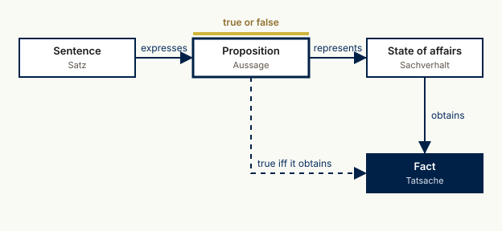

famulus-writingguide-1
A controlled language for the author’s papers and for explanations by language models
1 The guide
famulus-writingguide-1 is the author’s controlled language for English and German scholarly prose and for the explanations a language model gives to the author. It has the two parts of ASD-STE100, the controlled language of aerospace maintenance documentation: numbered writing rules with measured limits, and an approved vocabulary in which every word has one sense. It differs from ASD-STE100 in its subject: the rules fix the analytic terminology of the author’s philosophy, the causal terminology of the Graßhoff/May regularity theory, and the citation discipline of a scholarly text.
The guide is part of LWgrammar. Its machine form is stilprofile/famulus-writingguide-1.yaml; its rules are registered as R-LG-027 to R-LG-055 in lwgrammar_reference.duckdb and are revisable there (status active, revised, revoked). Where the machine form and this text differ, the machine form is out of date and is corrected; the rule catalogue below is generated from it.
The limits of the guide come from the author’s own papers: review.md counts sentence length, clauses, defects and citations in eight papers (2,987 sentences) and states the counting basis of every number.
2 Levels
A text unit is written at one level. The level decides which limits apply and which rules block.
| Level | For | Sentence limit (en / de) | Clause limit (en / de) |
|---|---|---|---|
strict |
definitions, theses, abstracts, formula readings, procedures, explanations to the author | 25 / 18 words | 3 / 2 |
standard |
running argument of a paper, documentation | 37 / 29 words | 5 / 3 |
narrative |
historical narration, landing pages, review essays | 44 / 34 words | 6 / 4 |
strict is the full specification: ASD-STE100 limits descriptive sentences to 25 words, and the German limit scales that by the ratio of the medians of the author’s German and English sentences (13 and 18 words). standard is the “80 %” form: its limits are the 90th percentile of the author’s own sentences, so the author already writes nine sentences in ten within them. narrative relaxes sentence form to the 95th percentile; the analytic, causal and citation rules hold at every level.
3 Part 1 — Writing rules
Each rule has a guide number (FWG1-…), a registered number (R-…) and a tier per level: blocking (a text that violates it is not delivered) or advisory (the finding is reported). A rule without an automatic detector binds through the lector’s judgement and says so.
3.1 W — Sentence and word
3.1.1 FWG1-W1 · Sentence length (R-LG-027)
A sentence stays within the word limit of its level and language (strict en 25 / de 18, standard en 37 / de 29, narrative en 44 / de 34 words).
Reason. Long sentences hide which proposition is asserted. Standard and narrative are the 90th and 95th percentiles of the author’s own sentences, so the standard level binds as the author already writes nine sentences in ten; strict is ASD-STE100’s 25-word limit, scaled for German by the ratio of the medians (13/18).
Tier per level. strict: blocking · standard: advisory · narrative: advisory. Detector. automatic, sentence_length (measurement fwg1_sentence).
- Not: What that correspondence shows about a shared outlook, and about any exchange of works between the two men, must be shown from the letters themselves: the claim of a close spiritual attitude and a joint production cannot rest on the fact of an exchange of letters alone. (ai-erasmus:180 (46 words before its gap marker))
- But: Famulus Erasmus is a working tool, and its name states what kind of tool it is. (ai-erasmus, Introduction (registers.md, approved))
3.1.2 FWG1-W2 · One claim per sentence (R-LG-028)
A sentence that makes a claim asserts one main proposition; its clause count stays within the limit of its level (strict en 3 / de 2, standard en 5 / de 3, narrative en 6 / de 4 clauses).
Reason. A sentence with many clauses joins several claims, and a reader cannot tell which one the citation or the inference marker belongs to.
Tier per level. strict: blocking · standard: advisory · narrative: advisory. Detector. automatic, clause_count (measurement fwg1_clauses).
- Not: For the decade of his first Basel residence, Erasmus kept a workshop in the printing house of Johann Froben, where amanuenses copied what he wrote, collated what others sent, fetched what he asked for, and counted what had to be counted, while he decided what was printed. (constructed from ai-erasmus:92)
- But: Famulus Erasmus is a working tool, and its name states what kind of tool it is. (ai-erasmus, Introduction (registers.md, approved))
3.1.3 FWG1-W3 · Thesis first (R-LG-012)
Each paragraph opens with the sentence that states what it claims (R-LG-012).
Tier per level. strict: advisory · standard: advisory · narrative: off. Detector. lector judgement (no automatic detector).
3.1.4 FWG1-W4 · Procedures as numbered steps (R-LG-029)
A procedure is written as a numbered list of imperative steps, one action per step; a step does not join two actions with ‘and’ or ‘then’.
Reason. The ASD-STE100 core rule for instructions: one action per step lets a reader check each step.
Tier per level. strict: blocking · standard: advisory · narrative: off. Detector. automatic, procedure_step (measurement fwg1_procedure).
- Not: 2. Slice cross-sectional bands and extract medial groove centrelines. (literate-coding-ai-agents:186)
- But: 2. Slice the scan into cross-sectional bands. (corrected form (constructed))
3.1.5 FWG1-W5 · No light-verb constructions (R-LG-030)
No Funktionsverbgefüge or light-verb constructions where a full verb exists: ‘zur Anwendung bringen’ → ‘anwenden’, ‘eine Entscheidung treffen’ → ‘entscheiden’, ‘perform an analysis of’ → ‘analyse’.
Reason. The nominal construction hides the action and its agent.
Tier per level. strict: blocking · standard: advisory · narrative: advisory. Detector. automatic, function_verb (measurement fwg1_function_verb).
- Not: Die Regel wird zur Anwendung gebracht, sobald der Lektor eine Entscheidung trifft. (constructed (no instance in the corpus))
- But: Der Lektor wendet die Regel an, sobald er entschieden hat. (corrected form (constructed))
3.1.6 FWG1-W6 · No nominal chains (R-LG-031)
No chain of four or more nouns linked by genitive, ‘of’ or compound in one phrase (‘the evaluation of the implementation of the use of …’); a verb carries the thought.
Reason. Dead abstraction (precision.md); the chain hides which action is asserted.
Tier per level. strict: blocking · standard: advisory · narrative: advisory. Detector. automatic, nominal_chain (measurement fwg1_nominal_chain).
- Not: The evaluation of the implementation of the use of the method is described below. (constructed (no instance in the corpus))
- But: We describe below how the method was implemented and evaluated. (corrected form (constructed))
3.1.7 FWG1-W7 · Approved vocabulary (R-LG-032)
A word of the approved vocabulary is used in its one approved sense; a non-approved word is replaced by the approved word the vocabulary names (e.g. leverage → use, delve into → examine, landscape → the named set, Herzstück → Teil mit genannter Funktion).
Reason. ASD-STE100 part 2: one word, one sense; vague and inflated words carry no proposition.
Tier per level. strict: blocking · standard: advisory · narrative: advisory. Detector. automatic, vocabulary (measurement fwg1_vocabulary).
- Not: This is the crucial asymmetry with a static pipeline: each successive round benefits from the evidence the prior round produced. (ai-erasmus:1296)
- But: The reason is an asymmetry of failure. (ai-erasmus, Index first, generation second (registers.md, approved))
3.1.8 FWG1-W8 · Use and mention marked (R-LG-033)
An expression that is mentioned, not used, stands in quotation marks or backticks: the word “verification”, not the word verification.
Reason. Without the mark a sentence about a word reads as a sentence about the thing.
Tier per level. strict: advisory · standard: advisory · narrative: advisory. Detector. automatic, mention_marking (measurement fwg1_mention).
- Not: The word verification is banned from conceptual prose. (constructed (no instance in the corpus))
- But: The word “verification” is banned from conceptual prose. (precision.md form)
3.2 A — Analytic terminology
3.2.1 FWG1-A1 · Truth-bearers and entailment (R-GG-001, R-LG-008, R-LG-009)
Only propositions are true or false (R-GG-001); entailment holds between propositions, never sentences (R-LG-008); a goal is not a proposition (R-LG-009).
Tier per level. strict: blocking · standard: blocking · narrative: blocking. Detector. lector judgement (no automatic detector).
3.2.2 FWG1-A2 · Soundness is not truth (R-LG-034)
From false premises nothing follows about the truth of the conclusion: a false premise or register entry makes the argument unsound and withdraws its justification (not validated); it never makes the conclusion false.
Reason. Author correction of 2 Oct 2026 on famulus-reasoning: conflating unsoundness with falsity is a basic logical fallacy.
Tier per level. strict: blocking · standard: blocking · narrative: blocking. Detector. automatic, soundness_truth (measurement fwg1_soundness).
- Not: If a register entry is false, the conclusion is false as well. (the fallacy corrected by the author on 2 Oct 2026 (famulus-reasoning, earlier version))
- But: If a register entry is false, the argument that rests on it is unsound, and its conclusion is not validated. (the author’s correction of 2 Oct 2026)
3.2.3 FWG1-A3 · ‘Not validated’ is the contradictory (R-LG-035)
‘nicht validiert’ / ‘not validated’ is the contradictory negation of ‘validiert’: it says no proof from registered grounds was found and is never a verdict that the sentence is false.
Reason. Sachliche Validität (24 Sep 2026): a missing ground is not a refutation.
Tier per level. strict: blocking · standard: blocking · narrative: blocking. Detector. automatic, not_validated_as_false (measurement fwg1_not_validated).
- Not: The sentence is not validated and therefore false. (constructed (no instance in the corpus))
- But: Not validated does not say that the proposition is false: the registered grounds do not suffice, and the argument names its weakest premise. (famulus-reasoning:243)
3.2.4 FWG1-A4 · Quantifiers and modals explicit (R-LG-036)
A general claim names its quantifier and domain (all, some, exactly n, of the named set); a modal names its sense (logically, nomologically, epistemically possible) where the sense is not fixed by the context.
Reason. A bare plural or an unspecified ‘can’ leaves open which proposition is asserted.
Tier per level. strict: advisory · standard: advisory · narrative: off. Detector. lector judgement (no automatic detector).
3.2.5 FWG1-A5 · Stipulations marked (R-LG-037)
A stipulative definition is marked as such (‘we fix’, ‘in this text … means’, ‘wir legen fest’); a lexical definition names its source.
Reason. A reader must know whether a definition reports use or fixes it.
Tier per level. strict: advisory · standard: advisory · narrative: off. Detector. lector judgement (no automatic detector).
3.2.6 FWG1-A6 · Logical relation verbs (R-LG-038)
A relation between propositions, theories or results is stated with a verb of the closed list (entails, follows from, is compatible with, contradicts, is causally relevant to, justifies, refers to, expresses; folgt aus, widerspricht, ist verträglich mit, begründet, bezeichnet, drückt aus) — not with ‘captures’, ‘reflects’, ‘mirrors’, ‘speaks to’, ‘spiegelt wider’.
Reason. The vague verb asserts some relation without saying which; the logical verb can be checked.
Tier per level. strict: blocking · standard: advisory · narrative: advisory. Detector. automatic, vague_relation (measurement fwg1_relation_verbs).
- Not: The result captures the main claim of the theory. (constructed (no instance in the corpus))
- But: The result entails the main claim of the theory. (corrected form (constructed))
3.2.7 FWG1-A7 · Metaphor-free conceptual prose (R-LG-039) — revises R-LG-013
Metaphor-free conceptual prose: no metaphor nouns as predicates (‘X is the backbone of Y’, ‘Herzstück’), no metaphor verbs (‘unlock’, ‘illuminate’, ‘beleuchten’), no stock metaphors (‘shed light on’, ‘Licht werfen auf’); precise technical terms instead. System terms of the author (Partitur, Conductor, Harness, score) are terms, not metaphors.
Reason. Revises R-LG-013 with a lexical and dependency detector; the NLI judgement stays advisory.
Tier per level. strict: blocking · standard: blocking · narrative: advisory. Detector. automatic, metaphor (measurement fwg1_metaphor), with an advisory NLI judgement.
- Not: Chapter 5 opens the door between the two. (ai-erasmus:313)
- But: Famulus Erasmus is a working tool, and its name states what kind of tool it is. (ai-erasmus, Introduction (registers.md, approved))
3.3 K — Causal terminology
3.3.1 FWG1-K1 · Causally relevant to (R-LG-040)
The house form is ‘is causally relevant to’ (English) and ‘ist kausal relevant für’ (German); ‘relevant for’ appears in English only inside verbatim quotations of Graßhoff & May 2001.
Reason. causal-regularity.xml, entry causal_relevance (house form amended 2026-08-18).
Tier per level. strict: blocking · standard: blocking · narrative: blocking. Detector. automatic, causal_relevance_preposition (measurement fwg1_causal_relevance).
- Not: The short circuit is causally relevant for the fire. (constructed (the corpus conforms: 41 × ‘causally relevant to’ in vol1–3))
- But: The short circuit is causally relevant to the fire. (house form (causal-regularity.xml, causal_relevance))
3.3.2 FWG1-K2 · Verbalisations say ‘causally relevant to’ (R-LG-041)
A verbalisation of a causal formula or diagram (‘Reading.’) says ‘is causally relevant to’, never ‘causes’.
Reason. causal-regularity.xml, entry verbalisation; the regularity theory does not assert production.
Tier per level. strict: blocking · standard: blocking · narrative: blocking. Detector. automatic, verbalisation_cause (measurement fwg1_verbalisation).
- Not: Reading. A short circuit with oxygen present causes the fire. (constructed (no instance in the corpus))
- But: Reading. A fire breaks out exactly when either a short circuit occurs with oxygen present, or flammable liquid meets a spark with oxygen present — and in no other way recorded in this field. (vol1-qualitative (registers.md, approved))
3.3.3 FWG1-K3 · Cluster, never route or package (R-LG-042) — revises R-LG-017
The conjunct bundle of a minimal sufficient condition is the cluster — never ‘route’, ‘package’ or ‘pathway’; Baumgartner’s ‘active causal route’ is the ‘active cluster’. The register’s own entry texts are exempt (owner decision 2026-10-03).
Reason. Revises R-LG-017 from scope causal-architect to every text that makes a causal claim.
Tier per level. strict: blocking · standard: blocking · narrative: blocking. Detector. automatic, cluster_naming (measurement fwg1_cluster).
- Not: Contradictions reveal that the factor set does not capture every causal pathway. (vol2-experimental:209)
- But: Contradictions show that the factor set does not contain every cluster. (corrected form (constructed))
3.3.4 FWG1-K4 · Factors are present or absent (R-LG-043)
A factor is present or absent in a case, never true or false; only propositions about factors are true or false.
Reason. causal-regularity.xml, entries factor and boolean; R-GG-001 for factors.
Tier per level. strict: blocking · standard: blocking · narrative: blocking. Detector. automatic, factor_truth (measurement fwg1_factor_truth).
- Not: The factor SC is true in case 3. (constructed (no instance in the corpus))
- But: The factor SC is present in case 3. (corrected form (constructed))
3.3.5 FWG1-K5 · Homogeneity is not constancy of all factors (R-LG-044)
Homogeneity is never ‘all factors (or circumstances) held constant or fixed’ — Mill’s unsatisfiable totality clause; the condition is the constant truth-value of the background bundle.
Reason. causal-regularity.xml, entries homogeneity (branch I obsolete), background_conditions, causal_field.
Tier per level. strict: blocking · standard: blocking · narrative: blocking. Detector. automatic, held_constant (measurement fwg1_homogeneity).
- Not: Their auxiliary conditions C2 and C3 are held fixed in the causal field. (vol3-casebook:261)
- But: The background bundle has a constant truth-value across the cases of the causal field. (causal-regularity.xml, homogeneity II.1 key phrase)
3.3.6 FWG1-K6 · No interventionist definitions (R-LG-045)
Causal terms are not defined in Pearl’s interventionist vocabulary (do-operator, structural causal model, causal DAG); the theory is the Graßhoff/May regularity account.
Reason. The two frameworks are incompatible; mixing them produces no coherent theory.
Tier per level. strict: blocking · standard: blocking · narrative: advisory. Detector. automatic, scm_vocabulary (measurement fwg1_scm).
- Not: Causal relevance is defined by the do-operator on a causal DAG. (constructed (the corpus discusses Pearl only as a rival))
- But: Pearl’s interventionist Structural Causal Model framework is not compatible with the regularity theory. (vol1-qualitative:1116)
3.3.7 FWG1-K7 · Clusters fire, they are not triggered (R-LG-046)
A cluster that is instantiated and sufficient in a case ‘fires’ or ‘is instantiated’ (‘is activated’ admitted); ‘trigger’ is not predicated of a cluster or factor. German: ‘auslösen’ and ‘aktivieren’ are the admitted words.
Reason. causal-regularity.xml, entries firing and instantiation; owner decision 2026-10-03 for German.
Tier per level. strict: blocking · standard: blocking · narrative: advisory. Detector. automatic, trigger_cluster (measurement fwg1_trigger).
- Not: The second cluster triggers the effect in case 3. (constructed (no instance in the corpus))
- But: The second cluster fires in case 3. (corrected form (constructed))
3.3.8 FWG1-K8 · Technical distinctions of the causal register (R-LG-047)
In causal-architect texts the register’s distinctions hold: type vs token; coincidence table vs truth table; configuration vs row; negated literal, never ‘negative factor’; causal hypergraph, never ‘causal graph’; consistency weight, never ‘BMA weight’; complex minimal theory, never ‘complex theory’; a contradictory configuration is a diagnostic, never a refutation; INUS only as the historical baseline.
Reason. causal-regularity.xml (about 50 entries); imported by cli causal-sync.
Scope. causal-architect.
Tier per level. strict: blocking · standard: advisory · narrative: advisory. Detector. automatic, causal_architect_terms (measurement fwg1_causal_terms).
- Not: One and the same effect can have many distinct clusters — conjunctions of positive and negative factors — each sufficient to bring about the effect in the given causal field. (vol1-qualitative:388)
- But: One and the same effect can have many distinct clusters — conjunctions of literals, some of them negated — each sufficient to bring about the effect in the given causal field. (corrected form (constructed))
3.4 C — Citations and bibliography
3.4.1 FWG1-C1 · Every borrowed item is cited (R-LG-048)
Every quotation, borrowed claim, number taken from a source and attributed thesis carries a citation key with locus in the same sentence, [@key, locus]; a paraphrase is cited as strictly as a quotation.
Reason. Lektorat DEF-A01 (unsupported claim) was the most frequent finding of the arXiv audit (69 of 597).
Tier per level. strict: blocking · standard: blocking · narrative: blocking. Detector. automatic, uncited_attribution (measurement fwg1_uncited_attribution), with an advisory NLI judgement; the detector proposes candidates and does not block.
- Not: They are not: Kepler models virtus motrix on light spreading from the Sun; Newton defines vis motrix as the product of an accelerating force and a quantity of matter; Euler defines vis motrix as the cause that of itself always produces motion. (lwgrammar-oed-ai:70)
- But: Ferdinand Rudio schrieb damals, auch der Briefwechsel müsse „soweit möglich, vollständig aufgenommen werden“ (Kleinert 2024, Abschn. 1). (geschichte-kepler-kommission:822 (published))
3.4.2 FWG1-C2 · Exact locus (R-LG-049)
The locus is exact: page or page range for printed sources; siglum before the section for Wittgenstein ([@key, PU §43], R-GG-002); collection, doc_id and pidx for PDAI material. A key without locus is admitted only when the sentence claims something about the whole work.
Reason. A citation without locus cannot be checked against the source.
Tier per level. strict: blocking · standard: blocking · narrative: blocking. Detector. automatic, citation_locus (measurement fwg1_locus).
- Not: Wittgenstein’s reminder — “the meaning of a word is its use in the language” [@wittgenstein1953] — is taken here as an engineering directive, not an epigraph. (ai-erasmus:456)
- But: Wittgenstein’s reminder — “the meaning of a word is its use in the language” [@wittgenstein1953, PU §43] — is taken here as an engineering directive, not an epigraph. (corrected form of ai-erasmus:456)
3.4.3 FWG1-C3 · Every key resolves (R-LG-050)
Every citation key resolves to an entry of the paper’s declared bibliography; a dangling key is a blocker (DEF-B01).
Tier per level. strict: blocking · standard: blocking · narrative: blocking. Detector. automatic, citation_keys (measurement fwg1_citation_keys).
- Not: geschichte-kepler-kommission declares no bibliography and cites by 176 inline loci (KGW 22, S. 519–525; Dok. 1, S. 7): the cited edition volumes have no entries.
- But: Every key [@key, locus] resolves to an entry of the declared bibliography.bib.
3.4.4 FWG1-C4 · Complete entries (R-LG-051)
Every bibliography entry carries the required fields of its biblatex type (citation.required_fields) and a DOI where one exists (DEF-B06); an entry that cannot be confirmed from a source actually read stays a visible gap [CITATION NEEDED: …] and is never composed (R-LG-014, DEF-B08).
Tier per level. strict: blocking · standard: blocking · narrative: blocking. Detector. automatic, bib_complete (measurement fwg1_bib_complete).
- Not: @article{grasshoff2026aipartitur, author, title, year} — a preprint typed @article without journal, volume and pages (ai-erasmus, lwgrammar-oed-ai, famulus-reasoning).
- But: @online{grasshoff2026aipartitur, author, title, year, eprint, eprinttype, url} — a preprint as @online with its identifier.
3.4.5 FWG1-C5 · Bibliography hygiene (R-LG-052)
No unused entries (DEF-B03), no duplicate keys, one key per work across companion papers (ai-erasmus, ai-partitur, ai-erasmus-golden-queries).
Tier per level. strict: advisory · standard: advisory · narrative: advisory. Detector. automatic, bib_hygiene (measurement fwg1_bib_hygiene).
- Not: causal-architect references.bib: 101 of 112 entries are not cited by vol1 — checked per volume instead of over the bundle of three volumes.
- But: Every entry is cited somewhere in the bundle the bibliography serves; no key occurs twice.
3.4.6 FWG1-C6 · Quotation fidelity (R-LG-014)
A verbatim quotation matches its source wording; where the source is in PDAI it is collated against the OCR. Collation is a fidelity check of LWgrammar; whether the source supports the claim is decided by famulus-proof (R-GG-016).
Tier per level. strict: blocking · standard: blocking · narrative: blocking. Detector. lector judgement (no automatic detector).
3.5 F — Output forms and design
3.5.1 FWG1-F1 · Choose the output form by content (R-LG-053)
An explanation chooses its form by its content: prose for a single claim or argument, a diagram for relations, hierarchies and flows, an HTML page for interactive exploration, an explainer video for processes in time and geometric constructions (ladder).
Reason. Karpathy’s ladder; a structure written as prose must be reconstructed by the reader.
Tier per level. strict: advisory · standard: advisory · narrative: off. Detector. lector judgement (no automatic detector).
3.5.2 FWG1-F2 · Every artefact carries a reading (R-LG-054)
A diagram, page or video carries a natural-language reading of what it asserts, the same evidence and number provenance as prose, and the mark ‘discardable understanding artefact’ or ‘publication artefact’; the rules against invention apply to both.
Tier per level. strict: blocking · standard: blocking · narrative: advisory. Detector. automatic, figure_reading (measurement fwg1_figure_reading).
- Not: A figure without caption reading and without artefact mark.
- But: The specimen truth-bearers.html: reading under the figure, mark ‘publication artefact’.
3.5.3 FWG1-F3 · D3 in the Bauhaus style, lettreai theme (R-LG-055)
Diagrams are drawn with D3 in the Bauhaus style: primary geometric forms, flat fills without gradients or shadows, a strict grid, one visual channel per variable, sans-serif labels, only the lettreai palette (Oxford blue #002147, gold #cfb53b, paper #fafaf5, ink #1a1a1a, sandstone tones; source: lettreai.typ and _brand.yml); PDF figures are pre-rendered SVG; Mermaid only where the host renders it, without colour directives.
Reason. Author preference (2026-10-03); guides/design/d3-bauhaus/ holds tokens and helper.
Tier per level. strict: blocking · standard: blocking · narrative: blocking. Detector. automatic, svg_palette (measurement fwg1_svg_palette).
- Not:
inside a linearGradient-filled figure. - But: guides/design/d3-bauhaus/specimens/truth-bearers.svg (0 palette findings).
4 The boundary to sachliche Validierung (R-GG-016)
LWgrammar checks language; famulus-proof checks justification. LWgrammar’s verdicts are konform / nicht konform and erhalten / verändert; famulus-proof alone issues sachlich validiert / nicht validiert, with proof graph and grounds. The citation rules of this guide test whether a source is named, resolves and is completely entered — not whether it supports the claim. The NLI measurements against a source (R-LG-024) and lw_logical_relations are fidelity checks, not proof steps. famulus-proof reads LWgrammar’s senses and per-paper terminology entries and writes nothing into LWgrammar; LWgrammar never reads proof verdicts to decide a language question. Clients show both verdicts separately.
In this guide, validated is used only in the famulus-proof sense, and not validated is its contradictory: it says that no proof from registered grounds was found, never that the sentence is false.
5 Causal terminology
The authority for causal terms is the causal-architect register development/causal-architect/paper/register/causal-regularity.xml (50 entries, 55 usage rules). cli causal-sync imports it into LWgrammar (senses …#grasshoff-may#…, rules CR-<entry>-<label>) and regenerates guides/terminology/causality.md; the guide’s group K states the rules every causal text must keep, and K8 the technical distinctions of causal-architect texts.
The import runs a Genus/Differentia test on every definition of the register: genus, differentia and what the term is distinct from must be stated in the theory’s own vocabulary. Three entries fail and their senses are held (not active) until the register is repaired: homogeneity sense III.1 (the condition is stated without its genus), minimally_necessary_condition and msc (no contrast statement). The test checks the content of definitions; the prose ban on “Genus: / Differentia: / Distinct from:” scaffolding (R-LG-003) is unaffected.
Owner decisions of 3 Oct 2026: a firing cluster is ausgelöst or aktiviert in German; the register keeps activated and the wording multiple routes of its equifinality entry; the Genus/Differentia test is a real test.
6 Part 2 — Approved vocabulary
The approved vocabulary fixes one sense for each word. A non-approved word stands outside quotation marks or backticks only if the author keeps it after the finding; the replacement is named in the table. Entries marked “lector judgement” are not detected automatically, because their sense cannot be told from the word alone (statement, imply, konsistent, zentral).
6.1 English (84 entries)
| Approved | Sense | Not (replace by) |
|---|---|---|
| sentence | a grammatically complete linguistic expression; never a truth-bearer | — |
| proposition | what a declarative sentence asserts in a context; the bearer of truth and falsity | statement (as truth-bearer; lector judgement) → proposition, or sentence if the expression is meant |
| state of affairs | a possible combination of objects; neither true nor false | — |
| fact | an obtaining state of affairs; neither true nor false | — |
| true / false | predicated of propositions only (R-GG-001) | — |
| entail | the relation in which the second proposition cannot be false when the first is true | imply (in the logical sense; lector judgement) → entail |
| follow from | converse of entail; holds between propositions, never sentences (R-LG-008) | — |
| contradict | two propositions cannot both be true | — |
| compatible | two propositions can both be true | — |
| consistent | a set of propositions that can all be true together | — |
| valid | of an argument: the conclusion follows from the premises; says nothing about the truth of the premises | — |
| sound | of an argument: valid and all premises true | — |
| unsound | of an argument: invalid or with a false premise; says nothing about the truth of the conclusion | — |
| justified | of a claim: supported by named grounds under a stated criterion | verified → justified (R-LG-007); proven (lector judgement) → justified, unless a deductive proof is given |
| validated | only the famulus-proof verdict ‘sachlich validiert’: the propositions follow from registered grounds (R-GG-016) | — |
| not validated | the contradictory of ‘validated’: no proof from registered grounds was found; never a verdict of falsity | — |
| conforms | LWgrammar verdict: a text satisfies the registered rules of language use (R-GG-016) | is valid (of a text) → conforms |
| claim | an asserted proposition | — |
| assert | to put forward a proposition as true | — |
| premise | a proposition from which a conclusion is derived | — |
| conclusion | the proposition derived in an argument | — |
| argument | premises together with a conclusion claimed to follow from them | — |
| inference | the step from premises to a conclusion | — |
| hypothesis | a proposition put forward for test | — |
| conjecture | a proposition asserted without the grounds that would justify it, marked as such | — |
| definition | fixes the use of a term; stipulative definitions are marked (‘we fix’) | — |
| term | a word or phrase with a fixed technical sense in a text | — |
| concept | what a term expresses; not the word itself | — |
| refer to | the relation between an expression and what it stands for | — |
| express | the relation between a sentence and the proposition it asserts | — |
| necessary condition | whenever the conditioned occurs, the condition occurs | — |
| sufficient condition | whenever the condition occurs, the conditioned occurs | — |
| type | a repeatable kind (event type) | — |
| token | a single occurrence of a type | — |
| goal | the description of an intended state of affairs; achieved or not, never true or false | — |
| action | the bringing-about of a state of affairs by an agent | — |
| evidence | the documents or data a claim rests on, each with its locus | — |
| ground | a registered proposition that a justification uses | — |
| locus | the exact place in a source: page, section, or (collection, doc_id, pidx) | — |
| citation | the key and locus that designate a source in the running text | — |
| reference | the bibliographical entry a citation key resolves to | — |
| quotation | the verbatim words of a source, in quotation marks, with citation | — |
| count | a number obtained by counting, stated with its counting basis (R-LG-006) | — |
| measurement | a number obtained by a stated procedure on a named machine and date | — |
| gap | a stated absence of evidence or implementation; never filled by invention | — |
| show | to establish by a named derivation or named evidence | demonstrate → show; reveal → show; highlight → show or state; underscore → state; illustrate → show by an example |
| state | to put into words | articulate → state |
| use | to employ | leverage → use; utilize → use; harness → use (outside the system term ‘Harness’) |
| expand | of a goal: replace it by its subgoals (R-LG-019) | unfold → expand |
| check | a test against a stated criterion (acceptance check) | — |
| criterion | the condition a check applies | lens → criterion; yardstick → criterion |
| set | the named collection of items | landscape → the named set (e.g. ‘the 14 edition viewers’); ecosystem → the named set of components |
| part | a component of a whole | cornerstone → part (with its function stated); pillar → part; backbone → part (with its function stated); building block → part |
| complex | consisting of many interacting parts (name them) | intricate → complex; nuanced → state the distinctions |
| many | a stated or estimated number (give it) | myriad → many (with the number); plethora → many (with the number); a wealth of → many (with the number) |
| important | only with the reason stated in the same sentence | crucial → important (with reason); pivotal → important (with reason); paramount → important (with reason); vital → important (with reason) |
| new | not previously available (name the predecessor) | novel → new; groundbreaking → new (R-LG-010); revolutionary → new (R-LG-010); innovative → new |
| examine | to investigate by a named method | delve → examine; delve into → examine; explore (lector judgement) → examine, unless a search is meant |
| comprehensive | covering every item of a named set (name the set) | holistic → comprehensive (name the set); all-encompassing → comprehensive |
| support | to supply grounds for | bolster → support; underpin → support (name the ground) |
| combine | to join named parts | synergy → combination (state what each part adds); weave → combine; interplay → relation (name it) |
| obtain | of a state of affairs: to be the case; a state of affairs obtains or does not, it is never true or false | — |
| refute | to show that a proposition is false by a named ground; a missing ground refutes nothing | — |
| confirm | of evidence: to support a proposition about a result; evidence confirms propositions, not facts or goals | — |
| stipulation | a fixing of how a word or instrument is to be used; not refuted by deviating use, which is incorrect | — |
| scope | the set a claim, count or rule is about, named in the same sentence (DEF-A06) | — |
| causal field | the range of test situations observed; asserts no constancy of any individual factor | — |
| background conditions | the causal factors not in the factor set; unrepresented, not necessarily constant | — |
| test situation | the empirical case behind a configuration of the coincidence table | — |
| is causally relevant to | a factor is a non-redundant part of a minimal theory of the effect | causally relevant for (detected by FWG1-K1) → causally relevant to; causes (in a verbalisation) → is causally relevant to |
| factor | a Boolean event type in a causal analysis; present or absent, never true or false | — |
| cluster | the conjunct bundle of a minimal sufficient condition | — |
| active cluster | the cluster instantiated in a given case | active causal route (detected by FWG1-K3, K8) → active cluster; active route (detected by FWG1-K3, K8) → active cluster |
| fires | a cluster is instantiated and sufficient in a case; ‘is activated’ admitted | triggers (detected by FWG1-K7) → fires / is instantiated |
| minimal theory | a minimally necessary disjunction of minimally sufficient conjunctions, stated as a biconditional | — |
| background bundle | the latent conjunction of standing conditions not in the factor set | — |
| homogeneity | constant truth-value of the background bundle; never ‘all factors held constant’ | — |
| coincidence table | the observed data matrix | truth table (for observed data) → coincidence table |
| configuration | a complete row of a coincidence table | row (in theoretical prose) → configuration |
| negated literal | the signed absence ¬A within a cluster | negative factor (detected by FWG1-K8) → negated literal |
| causal hypergraph | the representation of conjunctive sufficiency | causal graph (detected by FWG1-K8) → causal hypergraph; causal DAG (detected by FWG1-K6) → causal hypergraph (DAG is Pearl’s term) |
| consistency weight | the weight over the ambiguity set of candidate theories | BMA weight (detected by FWG1-K8) → consistency weight; posterior probability (of a theory; FWG1-K8) → consistency weight |
| factor set | the set F of factors under analysis | — |
| event type | a repeatable kind of occurrence; the relata of type-level causal claims | — |
6.2 German (72 entries)
| Approved | Sense | Not (replace by) |
|---|---|---|
| Satz | grammatisch vollständiger sprachlicher Ausdruck; nie wahr oder falsch | — |
| Aussage | was ein Behauptungssatz in einem Zusammenhang behauptet; Träger von Wahrheit und Falschheit | Proposition → Aussage |
| Sachverhalt | eine mögliche Verbindung von Gegenständen; weder wahr noch falsch | — |
| Tatsache | ein bestehender Sachverhalt; weder wahr noch falsch | — |
| wahr / falsch | nur von Aussagen (R-GG-001) | — |
| folgen aus | Folgerungsbeziehung zwischen Aussagen, nie zwischen Sätzen (R-LG-008) | implizieren (im logischen Sinn; Urteil des Lektors) → folgt aus |
| widersprechen | zwei Aussagen können nicht beide wahr sein | — |
| verträglich | zwei Aussagen können beide wahr sein | kompatibel → verträglich |
| widerspruchsfrei | eine Menge von Aussagen, die zusammen wahr sein können | konsistent (bei Aussagenmengen; Urteil des Lektors) → widerspruchsfrei |
| gültig | von einem Schluss: die Konklusion folgt aus den Prämissen; sagt nichts über die Wahrheit der Prämissen | — |
| korrekt | von einem Schluss: gültig und mit wahren Prämissen (engl. sound); in diesem Sinn festgelegt | — |
| nicht korrekt | von einem Schluss: ungültig oder mit falscher Prämisse; sagt nichts über die Wahrheit der Konklusion | — |
| begründet | von einer Behauptung: durch genannte Gründe nach einem genannten Kriterium gestützt | verifiziert → begründet (R-LG-007); bewiesen (Urteil des Lektors) → begründet, außer bei deduktivem Beweis |
| sachlich validiert | nur das Urteil von famulus-proof: die Aussagen folgen aus registrierten Gründen (R-GG-016) | — |
| nicht validiert | kontradiktorisches Gegenteil von ‘validiert’: kein Beweis aus registrierten Gründen gefunden; nie ein Urteil der Falschheit | — |
| konform | Urteil von LWgrammar: ein Text erfüllt die registrierten Gebrauchsregeln (R-GG-016) | valide (von einem Text) → konform |
| Behauptung | eine als wahr vorgebrachte Aussage | — |
| Prämisse | eine Aussage, aus der eine Konklusion abgeleitet wird | — |
| Konklusion | die in einem Argument abgeleitete Aussage | — |
| Argument | Prämissen mit einer Konklusion, die aus ihnen folgen soll | — |
| Hypothese | eine zur Prüfung vorgelegte Aussage | — |
| Vermutung | eine ohne rechtfertigende Gründe behauptete, als solche markierte Aussage | — |
| Definition | legt den Gebrauch eines Terminus fest; stipulative Definitionen werden markiert (‘wir legen fest’) | — |
| Terminus | ein Wort oder Ausdruck mit festgelegtem Fachsinn im Text | — |
| Begriff | was ein Terminus ausdrückt; nicht das Wort selbst | — |
| bezeichnen | Beziehung zwischen Ausdruck und Bezeichnetem | — |
| ausdrücken | Beziehung zwischen Satz und Aussage | — |
| notwendige Bedingung | wann immer das Bedingte eintritt, tritt die Bedingung ein | — |
| hinreichende Bedingung | wann immer die Bedingung eintritt, tritt das Bedingte ein | — |
| Typ | eine wiederholbare Art (Ereignistyp) | — |
| Einzelfall | ein einzelnes Vorkommnis eines Typs (engl. token) | — |
| Ziel | Beschreibung eines beabsichtigten Sachverhalts; erreicht oder nicht, nie wahr oder falsch | — |
| Handlung | das Herbeiführen eines Sachverhalts durch einen Handelnden | — |
| Beleg | Dokument oder Datum, auf dem eine Behauptung ruht, mit Fundort | — |
| Grund | eine registrierte Aussage, die eine Begründung verwendet | — |
| Fundort | die genaue Stelle in einer Quelle: Seite, Paragraph oder (Collection, doc_id, pidx) | — |
| Zitat | der wörtliche Text einer Quelle, in Anführungszeichen, mit Nachweis | — |
| Nachweis | Schlüssel und Fundort, die im Fließtext eine Quelle bezeichnen | — |
| Literaturangabe | der bibliographische Eintrag, auf den ein Nachweis verweist | — |
| Zählung | eine durch Zählen gewonnene Zahl, mit Zählbasis (R-LG-006) | — |
| Messung | eine durch genanntes Verfahren auf genannter Maschine und an genanntem Datum gewonnene Zahl | — |
| Lücke | ein benanntes Fehlen von Belegen oder Implementierung; nie durch Erfindung gefüllt | — |
| zeigen | durch genannte Herleitung oder genannte Belege feststellen | aufzeigen → zeigen; verdeutlichen → zeigen oder sagen; unterstreichen → sagen; veranschaulichen → an einem Beispiel zeigen |
| verwenden | gebrauchen | nutzbar machen → verwenden; zum Einsatz bringen → verwenden; zur Anwendung bringen → anwenden |
| anwenden | eine Regel oder ein Verfahren gebrauchen | zur Anwendung kommen → angewandt werden |
| untersuchen | mit genanntem Verfahren prüfen | einer Untersuchung unterziehen → untersuchen; beleuchten → untersuchen |
| entscheiden | eine Wahl festlegen | eine Entscheidung treffen → entscheiden |
| berücksichtigen | in die Prüfung einbeziehen | Berücksichtigung finden → berücksichtigt werden; in Betracht ziehen → berücksichtigen |
| ausführen | eine Handlung vollziehen | zur Durchführung bringen → ausführen |
| erweitern | von einem Ziel: durch Teilziele ersetzen (R-LG-019) | entfalten → erweitern |
| Teil | Bestandteil eines Ganzen | Herzstück → Teil (mit genannter Funktion); Rückgrat → Teil (mit genannter Funktion); Eckpfeiler → Teil |
| Menge | die benannte Gesamtheit | Landschaft → die benannte Menge; Ökosystem → die benannte Menge der Komponenten |
| Kriterium | die Bedingung, die eine Prüfung anwendet | Linse und Brille sind bei Kepler wörtlich; als Metapher für ein Kriterium: Urteil des Lektors |
| wichtig | nur mit im selben Satz genanntem Grund | entscheidend → wichtig (mit Grund); zentral (Urteil des Lektors) → wichtig, mit Grund; essenziell → notwendig (mit Bezug); fundamental → grundlegend (mit Bezug) |
| neu | zuvor nicht verfügbar (Vorgänger nennen) | bahnbrechend → neu (R-LG-010); innovativ → neu; revolutionär → neu |
| vollständig | alle Elemente einer benannten Menge umfassend | ganzheitlich → vollständig (Menge nennen); umfassend (Urteil des Lektors) → vollständig, Menge nennen |
| viele | eine genannte oder geschätzte Zahl (angeben) | eine Fülle von → viele (mit Zahl); eine Vielzahl von → viele (mit Zahl); unzählige → viele (mit Zahl) |
| bestehen | von einem Sachverhalt: der Fall sein; ein Sachverhalt besteht oder besteht nicht, er ist nie wahr oder falsch | — |
| widerlegen | durch einen genannten Grund zeigen, dass eine Aussage falsch ist; ein fehlender Grund widerlegt nichts | — |
| bestätigen | von Belegen: eine Aussage über ein Ergebnis stützen; Belege bestätigen Aussagen, nicht Tatsachen oder Ziele | — |
| Festsetzung | eine Festlegung, wie ein Wort oder Instrument zu gebrauchen ist; abweichender Gebrauch ist unrichtig, nicht widerlegend | — |
| Geltungsbereich | die Menge, über die eine Behauptung, Zählung oder Regel spricht, im selben Satz genannt (DEF-A06) | — |
| kausal relevant für | ein Faktor ist nicht redundanter Teil einer minimalen Theorie der Wirkung (deutsche Hausform) | — |
| Faktor | ein boolescher Ereignistyp in einer Kausalanalyse; vorhanden oder abwesend, nie wahr oder falsch | — |
| Cluster | das Konjunktionsbündel einer minimal hinreichenden Bedingung | Route, Pfad, Paket sind im kausalen Zusammenhang durch FWG1-K3 ausgeschlossen |
| auslösen | ein Cluster ist im Einzelfall instanziiert und hinreichend; ‘aktivieren’ gleichwertig zugelassen (Autorentscheidung 2026-10-03) | — |
| minimale Theorie | minimal notwendige Disjunktion minimal hinreichender Konjunktionen | — |
| Faktorenmenge | die Menge F der untersuchten Faktoren | — |
| Konfiguration | eine vollständige Zeile der Koinzidenztabelle | — |
| Hintergrundbündel | die verborgene Konjunktion der nicht untersuchten stehenden Bedingungen | — |
| Homogenität | konstanter Wahrheitswert des Hintergrundbündels; nie ‘alle Faktoren konstant gehalten’ | — |
| negiertes Literal | das gezeichnete Fehlen ¬A in einem Cluster | negativer Faktor (erkannt von FWG1-K8) → negiertes Literal |
7 Output forms
An explanation chooses its form by its content (FWG1-F1). Every artefact carries a natural-language reading, the same evidence and number provenance as prose, and one of the marks discardable understanding artefact or publication artefact (FWG1-F2).
| Form | When | Requirements |
|---|---|---|
| Prose | a single claim, a definition, an argument, a verdict | the sentence rules of the selected level |
| Diagram | relations, hierarchies, flows, dependencies, a minimal theory | D3 in the Bauhaus style with the lettreai tokens; pre-rendered SVG for PDF |
| HTML page | interactive exploration of parameters, data or alternative cases | lettreai theme, D3 for every chart, data and provenance on the page |
| Explainer video | a process in time, a geometric construction, a derivation shown step by step | Manim CE and local text-to-speech; ElevenLabs only with the owner’s key. Specified, not implemented |
Diagrams follow FWG1-F3: primary geometric forms with square corners, flat fills without gradients or shadows, elements on a 24-px grid, one visual channel per variable, sans-serif labels, and only the colours of guides/design/d3-bauhaus/tokens.json (Oxford blue #002147, gold #cfb53b, paper #fafaf5, ink #1a1a1a, sandstone). The kit guides/design/d3-bauhaus/ holds the tokens, the D3 helper bauhaus.js and the specimen below; writingguide.palette.prerender turns a D3 page into the static SVG of a PDF and checks it against the tokens.

8 German specifics
German texts follow the same rules with three additions. Light-verb constructions (Funktionsverbgefüge: zur Anwendung bringen, eine Entscheidung treffen, Berücksichtigung finden) are replaced by the full verb (FWG1-W5). Adjectives in -mäßig (R-GG-013) and headings translated word for word from English (R-GG-014) are avoided. The German house form of causal relevance is ist kausal relevant für; the English house form is is causally relevant to (FWG1-K1).
9 Using the guide
| Where | How |
|---|---|
| Writing modes | conceptual-paper-en, causal-architect, orchestrator-book (standard), editionsgeschichte-de (narrative), explain-en, explain-de (strict, with the output forms): cli mode <name> or lw_mode |
| Task forms | explain (strict), generate, synthesize-answer, notebook-text (standard). The revision forms do not load the guide: a revision keeps the author’s register (R-LG-026) |
| Checking a text | cli writingguide detect --file <text.qmd> --lang en --level standard [--paper-dir <paper>], MCP lw_writingguide_check; the guard measurements fwg1_… in lw_evaluate / check_generated |
| ai-lektorat | Partitur cards Sprache → famulus-writingguide-1 → streng / 80 % |
| Status | cli writingguide status; causal register cli causal-sync --report |
| Tests | tests/golden_writingguide.py (one negative and one positive example per detector), tests/golden_conformity.py |
10 Revision
Every rule carries status and source in usage_rule_entry. The author’s decisions outrank machine findings: an accepted Fassung against a finding opens a contested candidate, a rejected Fassung without a finding a missed candidate (lw_rule_candidates), and only the author’s answer changes a rule (lw_resolve_candidate). Changes of a detector after registration are synchronised from the YAML by writingguide.register.sync_detectors and written to usage_rule_history. A new version of the guide receives a new label (famulus-writingguide-2); this label stays fixed.